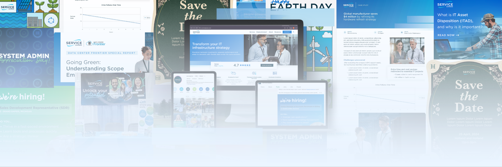
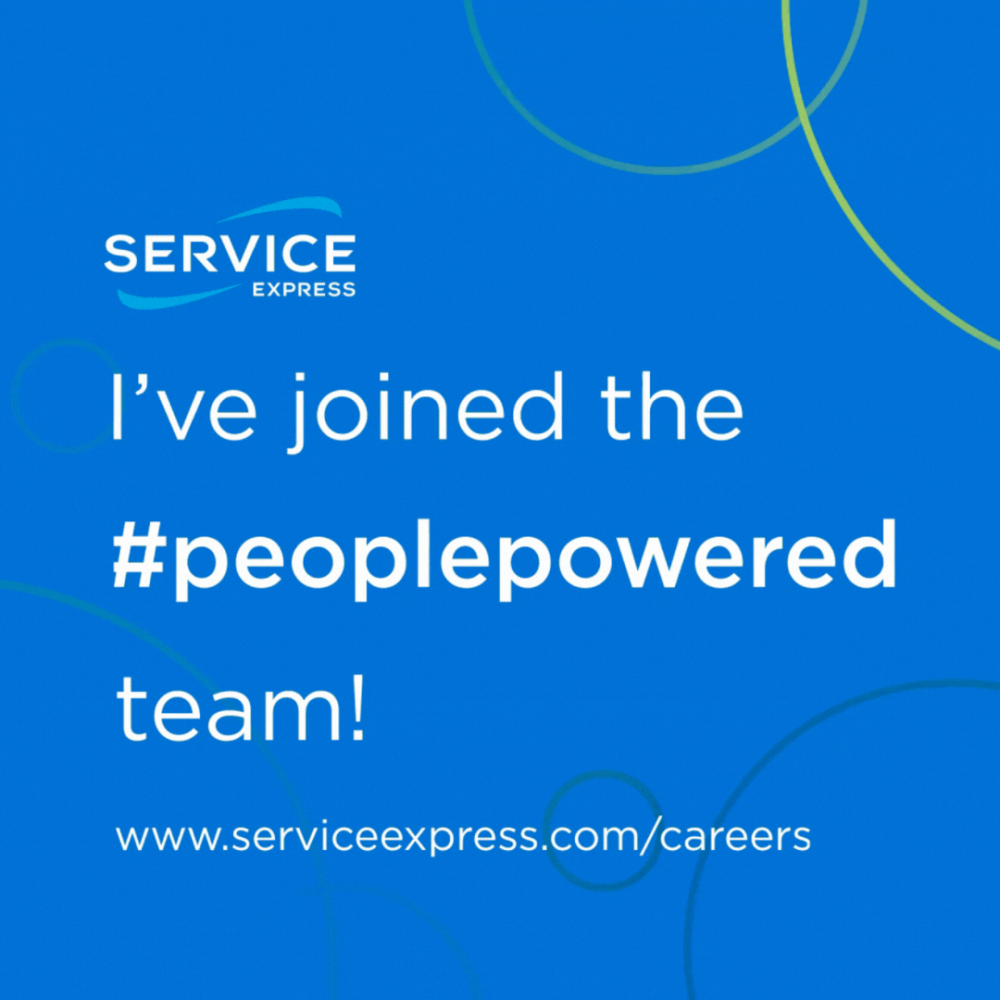
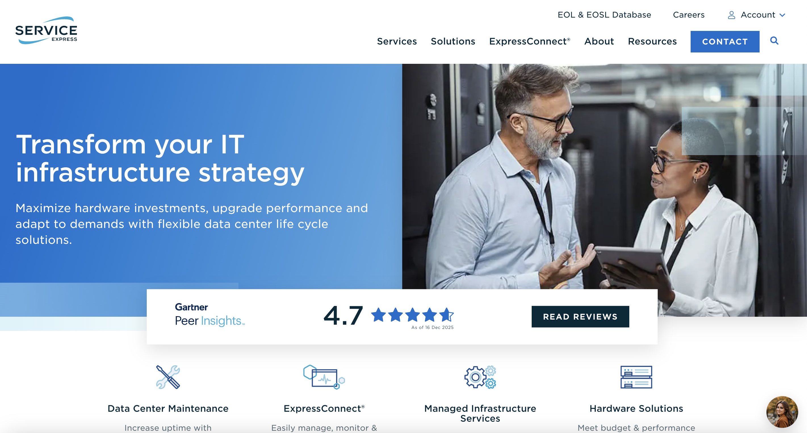
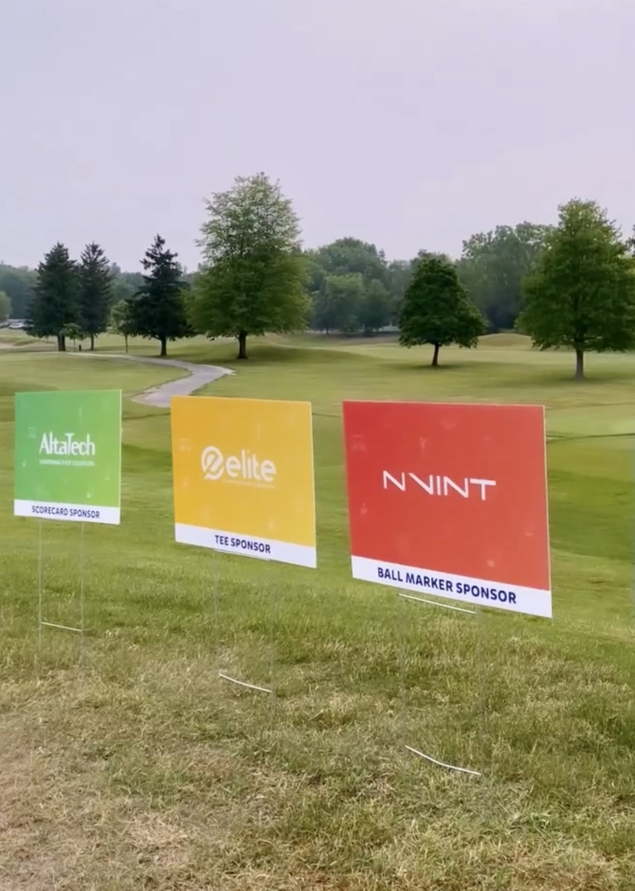

Visual Design & Branding
- Adobe Photoshop
- Adobe Illustrator
- Powerpoint & Canva (making branded templates for non-designers)

During my internship at Service Express, I worked closely with both the US and UK teams, contributing to a variety of high-profile design projects across multiple channels. As an intern, I was entrusted with significant responsibilities that ranged from webpage redesigns to digital advertising and event assets. My work supported Service Express’s global marketing efforts, reinforcing their brand presence and delivering creative solutions that aligned with business goals.







